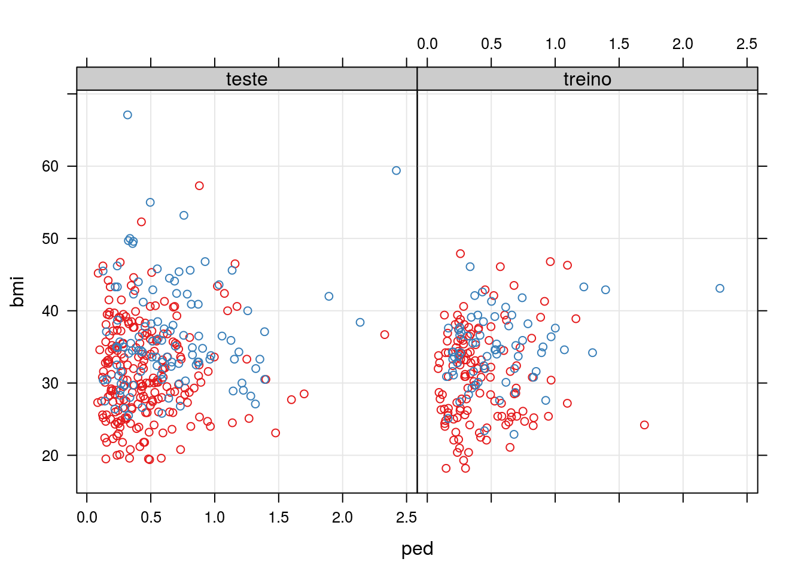
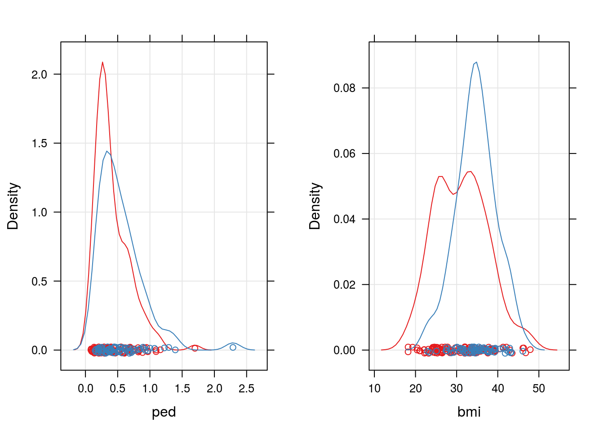
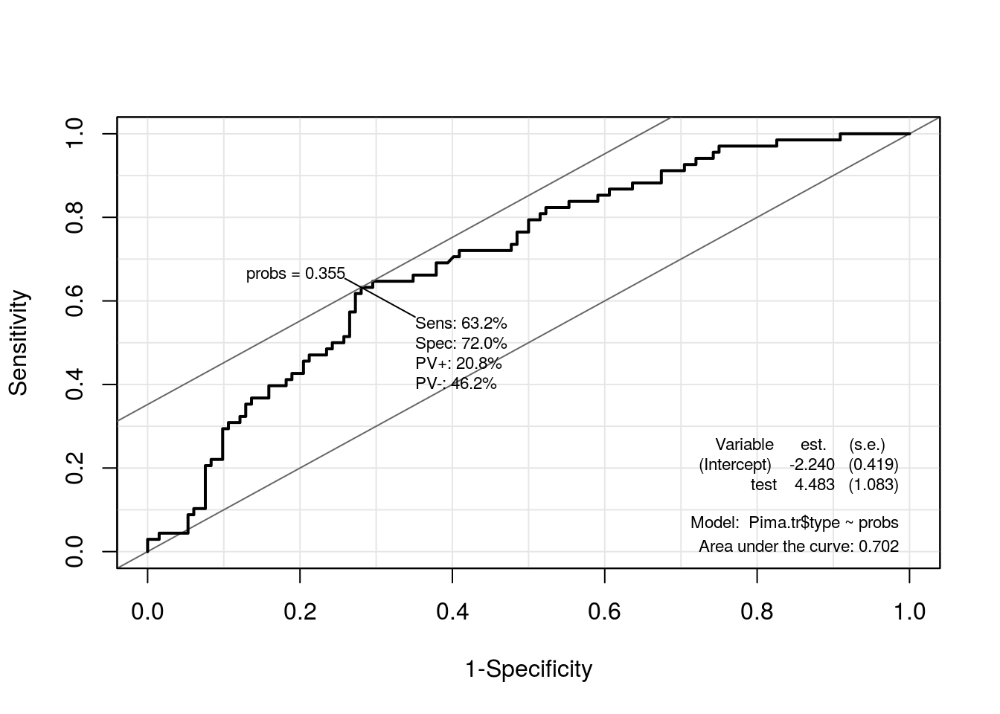
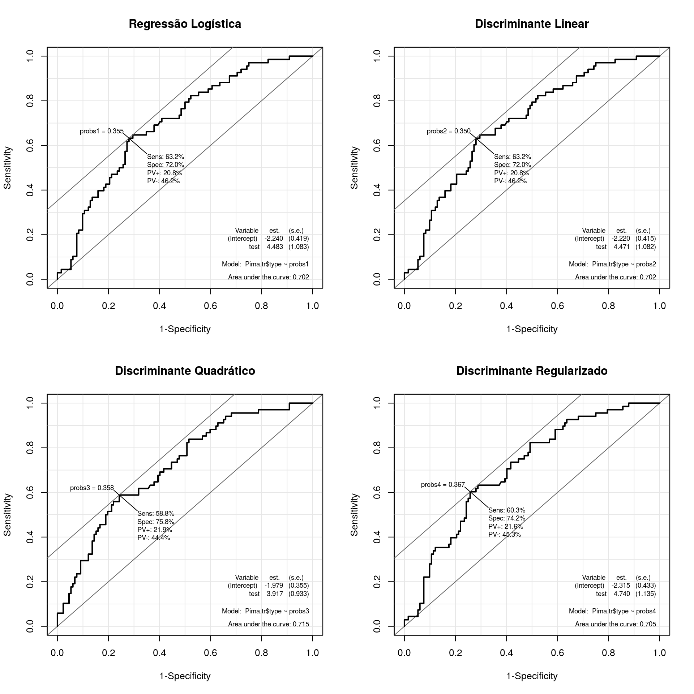

Para a aplicação dos métodos de classificação apresentados em sala de aula utilizaremos a conjunto Pima.te e Pima.tr, do pacote MASS do software R. Estes dados se referem a um levantamento realizado pelo Instituto Nacional de Diabetes, Doenças Digestivas e Renais dos Estados Unidados com mulheres do povoado indígena Pima, próximo a Phoenix, Estado do Arizona. Ao todo a base de dados contém o registro de 8 variáveis, contudo nesse trabalho utilizaremos somente as variáveis descritas abaixo.
type: Se a mulher tem ou não diabetes, com base nos critérios da OMS;bmi: índice de massa corporal, calculado como peso\(cdot\)altura\(^{-2}\), sendo o peso e a altura mensurados em quilogramas e metros respectivamente.ped: Diabetes Pedigree Function (DPF), valores que medem a tendência ao desenvolvimento de diabetes com base nas relações genéticas do indivíduo.1O objetivo neste estudo é classificar as mulheres com e sem diabetes baseando-se no índice de massa corporal e no valor da função DPF. Uma característica destes dados é que eles já estão divididos em, no R, em base a ser utilizada para o treino do método classificador, Pima.tr e base de teste para utilizar o método já calibrado, denominada Pima.te.
Abaixo temos a representação gráfica do conjunto de dados.
library(MASS)
id <- c(rep("treino", nrow(Pima.tr)),
rep("teste", nrow(Pima.te)))
xyplot(bmi ~ ped | id, groups = type,
grid = TRUE,
data = rbind(Pima.tr, Pima.te))
## Visualizando os dados para antecipar problemas com classificadores
d1 <- densityplot(~bmi, groups = type, grid = TRUE, data = Pima.tr)
d2 <- densityplot(~ped, groups = type, grid = TRUE, data = Pima.tr)
print(d1, split = c(2, 1, 2, 1), more = TRUE)
print(d2, split = c(1, 1, 2, 1), more = FALSE)
Com base nos gráficos acima já podemos prever uma taxa de classificação não tão elevada, pois as variáveis escolhidas para classificação estão dispostas de forma muito similar.
O modelo denominado modelo logístico é um modelo da classe dos modelos lineares generalizados, cujo a distribuição considerada para a relação condicional \(Y \mid X\) é Binomial(\(m\), \(\pi\)) e função de ligação logito (qu dá nome ao modelo). Assim o modelo pode ser escrito da seguinte forma:
\[ \begin{aligned} Y \mid X_i \sim \textrm{Binomial}(m_i, \, \pi_i) \\ \log \left ( \frac{\pi}{ 1 - \pi} \right ) = X\beta \end{aligned} \]
No software R (nativo na instalação, pacote base), temos os framework glm que ajuste modelos de regressão lineares generalizados via minimização da função deviance. Utilizaremos esta função para ajuste do modelo logístico e alternativamente será programado o algoritmo de maximização da log-verossimilhança para exemplicar o método de estimação dos parâmetros. Como são otimizações equivalentes os resultados devem ser iguais.
## Função para estimação de um GLM Binomial (restrito a n = 1)
binomreg <- function(formula, data) {
## Declarando a função de verossimilhança
veross <- function(betas, y, X, log = TRUE) {
eXb <- exp(X %*% betas)
pi <- eXb / (1 + eXb)
ll <- sum(y * log(pi) + (1 - y) * log(1 - pi))
if (!log) ll <- exp(ll)
return(ll)
}
## Definindo as matrizes do modelo
frame <- model.frame(formula, data = data)
y <- model.response(frame)
X <- model.matrix(formula, data)
if(!class(y) %in% c("numeric", "integer")) {
y <- as.integer(y) - 1
}
## Otimizando
opt <- optim(par = rep(0, ncol(X)), veross,
y = y, X = X, method = "BFGS",
control = list(fnscale = -1))
return(opt)
}
##-------------------------------------------
## Utilizando a função no nosso conjunto de dados
## Definindo os preditores lineares
f1 <- type ~ 1
f2 <- type ~ bmi + ped
## Ajustando os modelos com a função descrita
m1 <- binomreg(f1, data = Pima.tr)
m2 <- binomreg(f2, data = Pima.tr)
## Ajustando os modelos com a glm
g1 <- glm(f1, data = Pima.tr, family = binomial)
g2 <- glm(f2, data = Pima.tr, family = binomial)
## Comparando os ajustes
## Log-verossimilhança alcançada
cbind("GLM" = c(logLik(g1), logLik(g2)),
"binomreg" = c(m1$value, m2$value))## GLM binomreg
## [1,] -128.2071 -128.2071
## [2,] -117.5110 -117.5110## Agora os coeficientes estimados
cbind("GLM" = c(coef(g1), coef(g2)),
"binomreg" = c(m1$par, m2$par))## GLM binomreg
## (Intercept) -0.66329422 -0.66329424
## (Intercept) -4.37613317 -4.37517161
## bmi 0.09612468 0.09610259
## ped 1.17601545 1.17561713Verificando agora o poder preditivo (de classificação) do modelo ajustado
library(Epi)
## ROC(form = f2, data = Pima.tr, plot = "ROC")
probs <- predict(g2, type = "response")
ROC(test = probs, stat = Pima.tr$type, plot = "ROC")
## Realizando a classificação via GLM com ponto de corte ótimo
cg <- ifelse(predict(g2, type = "response") > 0.3553, "Yes", "No")
## Tabela de classificação no treino
(tcg <- table(cg, Pima.tr$type))##
## cg No Yes
## No 95 25
## Yes 37 43## Tabela de classificação no teste
cg <- ifelse(predict(g2, newdata = Pima.te, type = "response") > 0.3553,
"Yes", "No")
table(cg, Pima.te$type)##
## cg No Yes
## No 139 31
## Yes 84 78library(MASS)
## Realizando a análise via Discriminante linear
dl <- lda(type ~ ped + bmi, data = Pima.tr)
## Tabela de classificação no treino
(tdl <- table(predict(dl)$class, Pima.tr$type))##
## No Yes
## No 119 51
## Yes 13 17## Tabela de classificação no teste
table(predict(dl, newdata = Pima.te)$class, Pima.te$type)##
## No Yes
## No 195 65
## Yes 28 44library(MASS)
## Realizando a análise via Discriminante linear
dq <- qda(type ~ ped + bmi, data = Pima.tr)
## Tabela de classificação no treino
(tdq <- table(predict(dq)$class, Pima.tr$type))##
## No Yes
## No 123 55
## Yes 9 13## Tabela de classificação no teste
table(predict(dq, newdata = Pima.te)$class, Pima.te$type)##
## No Yes
## No 204 73
## Yes 19 36library(klaR)
## Realizando a análise via Discriminante linear
dr <- rda(type ~ ped + bmi, data = Pima.tr)
## Tabela de classificação no treino
(tdr <- table(predict(dr)$class, Pima.tr$type))##
## No Yes
## No 120 53
## Yes 12 15## Tabela de classificação no teste
table(predict(dr, newdata = Pima.te)$class, Pima.te$type)##
## No Yes
## No 197 68
## Yes 26 41Como comparação de métodos de classificação temos, além das tabelas de predição um gráfico que apresenta, geralmente os valores de especificidade e sensibilidade calculados para um intervalo de pontos de corte considerados na classificação. Este gráfico já fora utilizado na seção Modelo Logístico, onde a utilizamos para encontrar o ponto de corte ótimo de classificação. Aqui como critério de comparação utilizaremos a área abaixo da curva (do inglês Area Under the Curve - AUC), pois quanto maior a área maior a acertividade do método.
par(mfrow = c(2, 2))
## Para o GLM
probs1 <- predict(g2, type = "response")
rcg <- ROC(test = probs1, stat = Pima.tr$type, plot = "ROC")
title("Regressão Logística")
## Para o Discriminante Linear
probs2 <- predict(dl)$posterior[, "Yes"]
rdl <- ROC(test = probs2, stat = Pima.tr$type, plot = "ROC")
title("Discriminante Linear")
## Para o Discriminante Quadrático
probs3 <- predict(dq)$posterior[, "Yes"]
rdq <- ROC(test = probs3, stat = Pima.tr$type, plot = "ROC")
title("Discriminante Quadrático")
## Para o Discriminante Regularizado
probs4 <- predict(dr)$posterior[, "Yes"]
rdr <- ROC(test = probs4, stat = Pima.tr$type, plot = "ROC")
title("Discriminante Regularizado")
## Comparando via AUC, Sensibilidade, Especificidade, Negativo/Positivo,
## Positivo/Negativo e Pontos de Corte respectivamente.
tableC <- sapply(list(rcg, rdl, rdq, rdr),
FUN = function(roc) {
index <- with(roc$res,
which.max(sens + spec))
round(cbind(roc$res[index, ],
"AUC" = roc$AUC), 4)
})
colnames(tableC) <- c("Reg. Logística", "Discr. Linear",
"Discr. Quadrático", "Discr. Regularizado")
kable(tableC, align = c("c", "c", "c", "c"))| Reg. Logística | Discr. Linear | Discr. Quadrático | Discr. Regularizado | |
|---|---|---|---|---|
| sens | 0.6324 | 0.6324 | 0.5882 | 0.6029 |
| spec | 0.7197 | 0.7197 | 0.7576 | 0.7424 |
| pvp | 0.2083 | 0.2083 | 0.2188 | 0.216 |
| pvn | 0.4625 | 0.4625 | 0.4444 | 0.4533 |
| probs1 | 0.3553 | 0.3503 | 0.3577 | 0.3666 |
| AUC | 0.7023 | 0.7019 | 0.7153 | 0.7049 |
Pelos gráficos e pela tabela acima temos o método de classificação por Discrinante Quadrático de Fisher com um desempenho ligeiramente superior aos demais que se seguem na ordem Regressão Logística e Discriminante Linear com desempenho equivalente e via Discriminante Regularizado com o pior desempenho.
Ressalta-se aqui que não consideramos na análise custos associados a falsos positivos e falsos negativos, ou ainda benefícios à verdadeiros positivos e verdadeiros negativos. Isto pode e deve, quando disponível, ser levado em consideração, neste trabalho todas essas situações tem o peso peso e assim foram calculados os demais resultados (principalmente o ponto de corte de classificação, que leva em conta o ponto que maximiza a especificidade e sensibilidade conjuntamente). Ainda destacamos que, embora nesse caso tenhamos os resultados no conjunto de teste Pima.te, na prática isso não acontece e portanto tentou-se reproduzir uma análise real, onde todos os resultados são retirados do conjunto de treino para, então o método calibrado ser aplicado ao conjunto de treino.
cat(format(Sys.time(),
format = "Atualizado em %d de %B de %Y.\n\n"))## Atualizado em 08 de agosto de 2016.sessionInfo()## R version 3.3.1 (2016-06-21)
## Platform: x86_64-pc-linux-gnu (64-bit)
## Running under: Ubuntu 14.04.5 LTS
##
## locale:
## [1] LC_CTYPE=en_US.UTF-8 LC_NUMERIC=C
## [3] LC_TIME=pt_BR.UTF-8 LC_COLLATE=en_US.UTF-8
## [5] LC_MONETARY=pt_BR.UTF-8 LC_MESSAGES=en_US.UTF-8
## [7] LC_PAPER=pt_BR.UTF-8 LC_NAME=C
## [9] LC_ADDRESS=C LC_TELEPHONE=C
## [11] LC_MEASUREMENT=pt_BR.UTF-8 LC_IDENTIFICATION=C
##
## attached base packages:
## [1] parallel stats graphics grDevices utils datasets methods
## [8] base
##
## other attached packages:
## [1] klaR_0.6-12 Epi_2.0 MASS_7.3-45
## [4] glmnet_2.0-5 foreach_1.4.3 Matrix_1.2-6
## [7] mboost_2.6-0 stabs_0.5-1 knitr_1.12.3
## [10] latticeExtra_0.6-28 RColorBrewer_1.1-2 lattice_0.20-33
##
## loaded via a namespace (and not attached):
## [1] Rcpp_0.12.5 compiler_3.3.1 formatR_1.3
## [4] highr_0.5.1 plyr_1.8.3 iterators_1.0.8
## [7] tools_3.3.1 digest_0.6.9 evaluate_0.9
## [10] cmprsk_2.2-7 yaml_2.1.13 mvtnorm_1.0-5
## [13] coin_1.1-2 stringr_1.0.0 combinat_0.0-8
## [16] stats4_3.3.1 grid_3.3.1 survival_2.39-4
## [19] etm_0.6-2 rmarkdown_0.9.6 multcomp_1.4-5
## [22] TH.data_1.0-7 magrittr_1.5 codetools_0.2-14
## [25] htmltools_0.3 modeltools_0.2-21 nnls_1.4
## [28] splines_3.3.1 strucchange_1.5-1 quadprog_1.5-5
## [31] sandwich_2.3-4 stringi_1.0-1 party_1.0-25
## [34] zoo_1.7-13J. W. Smith, J. E. Everhart, W. C. Dickson, W. C. Knowler, and R. S. Johannes (1988). Using the ADAP learning algorithm to forecast the onset of diabetes mellitus. In Symposium on Computer Applications in Medical Care , 261–265↩